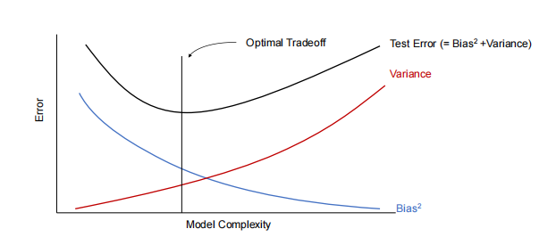
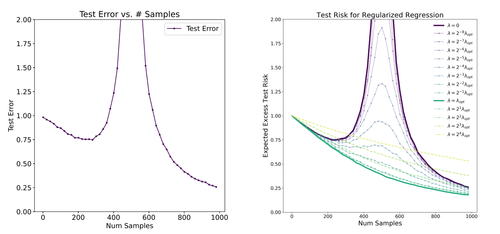

Lecture 9
2018 Autumn CS229 Lecture9笔记 # 偏差-方差 测试误差分解为"bias"和"variance"项, 并研究它们中的每一个是如何受到模型参数化选择及其权衡的影响的。使用偏差-方差权衡, 我们将讨论何时会发生过拟合和欠拟合并避免。
测试误差和训练误差之间的差异通常被称为泛化差距。
通常, 在偏差和方差之间存在权衡。如果我们的模型太“简单”并且参数很少, 那么它可能会有很大的偏差（但方差很小）, 并且它通常会遭受欠拟合。如果它太“复杂”并且有很多参数, 那么它可能会受到大方差的影响（但偏差较小）, 从而导致过拟合。偏差和方差之间的典型权衡如下  图8.8 偏差-方差权衡曲线 偏差-方差权衡曲线或测试误差曲线并不普遍地遵循图8.8的形状, 至少在简单地通过参数数量来衡量模型复杂性时不是普遍的。
二次下降现象
模型双下降
- 传统观点：随着模型复杂度的增加, 测试误差先减小（欠拟合区域）, 然后增大（过拟合区域）, 形成一个U形曲线。
- 双下降现象：在模型复杂度非常高时, 测试误差会再次下降, 形成第二个下降区域, 称为“双下降”。
逐样本双下降
随着样本量的增加, 测试误差并不是单调递减的。相反, 如图9_3所示, 测试误差先减小, 然后增大, 并在示例数量（由n表示）与参数数量（由d表示）相似时达到峰值, 然后再次减小。我们称之为样本双下降现象。 当n≈d时, 还有其他算法可以实现较小的测试误差, 但这些实验中评估的算法未能做到这一点。 事实上, 可以通过优化正则化, n≈d区域的测试误差可以得到显著改善, 模型和样本双下降都得到了缓解 
样本复杂性界限
切尔诺夫界（Chernoff Bound）/霍夫丁不等式
切尔诺夫界是概率论中的一个重要不等式，用于描述独立同分布（i.i.d.）随机变量的均值与其期望值之间偏差的概率上界。以下是其定义和应用：
1. 问题设定
- 设 ( Z_1, Z_2, , Z_n ) 是 ( n )
个独立同分布的随机变量，服从伯努利分布 ( () )。
- ( P(Z_i = 1) = )
- ( P(Z_i = 0) = 1 - )
- 定义 ( = _{i=1}^n Z_i ) 为这些随机变量的均值。
- 设 ( > 0 ) 为任意固定常数。
2. 切尔诺夫界（Chernoff Bound）/霍夫丁不等式
切尔诺夫界给出了 ( ) 与真实值 ( ) 之间偏差的概率上界： \[ P(|\phi - \hat{\phi}| > \gamma) \leq 2 \exp(-2\gamma^2 n) \]
3. 训练误差（Training Error）
训练误差（也称为经验风险或经验误差）是模型在训练集上的错误率： \[ \hat{\epsilon}(h) = \frac{1}{n} \sum_{i=1}^n \mathbb{1}\{h(x^{(i)}) \neq y^{(i)}\} \] 其中： - ( {} ) 是指示函数，当条件成立时取值为 1，否则为 0。 - ( n ) 是训练样本的数量。
4. 泛化误差（Generalization Error）
泛化误差是模型在分布 ( D ) 上的期望错误率，反映了模型在未见数据上的表现： \[ \epsilon(h) = P_{(x,y) \sim D}(h(x) \neq y) \] 其中： - ( (x, y) ) 是从分布 ( D ) 中抽取的新样本。
4. PAC 假设
- 假设训练数据和测试数据来自相同的分布 ( D )，这是 PAC（Probably Approximately Correct）学习理论中的一个基本假设。
这一假设确保了训练误差能够有效反映泛化误差。
偏差-方差分解（Bias-Variance Decomposition）
在机器学习中, 偏差-方差分解是一种用于分析模型预测误差的方法。它将误差分解为三个部分：不可避免的噪声、偏差和方差。
1. 误差分解公式
对于给定的输入 ( x ), 均方误差（MSE）可以分解为： \[ \text{MSE}(x) = \sigma^2 + \text{Bias}^2 + \text{Variance} \] 其中： - ( ^2 )：不可避免的噪声, 表示数据中的随机噪声, 无法通过模型预测。 - ( ^2 )：偏差的平方, 表示模型预测值与真实值之间的系统性误差。 - ( )：方差, 表示模型对训练数据的随机性敏感程度。
2. 偏差（Bias）
- 定义：偏差是模型预测值的期望与真实值之间的差异：
\[
\text{Bias} = h^*(x) - h_{\text{avg}}(x)
\] 其中：
- ( h^*(x) ) 是真实值。
- ( h_{}(x) ) 是模型在无限数据集上的平均预测值。
含义：偏差反映了模型由于表达能力不足而引入的系统性误差。即使有无限数据, 偏差仍然存在。
3. 方差（Variance）
- 定义：方差是模型预测值在不同数据集上的波动： \[
\text{Variance} = \mathbb{E}[(h_{\text{avg}}(x) - h_S(x))^2]
\] 其中：
- ( h_S(x) ) 是模型在特定数据集 ( S ) 上的预测值。
含义：方差反映了模型对训练数据随机性的敏感程度。随着数据集规模的增加, 方差通常会减小。
4. 噪声（Noise）
- 定义：噪声是数据中无法预测的随机误差： \[ \sigma^2 = \text{Var}(\xi) \] 其中 ( ) 是噪声项。
- 含义：噪声是不可避免的, 因为它与模型的表达能力无关。
5. 偏差-方差的权衡
- 高偏差：模型过于简单, 无法捕捉数据的真实分布, 导致欠拟合（underfitting）。
- 高方差：模型过于复杂, 对训练数据的随机性过于敏感, 导致过拟合（overfitting）。
- 目标：通过调整模型复杂度, 找到偏差和方差之间的最佳平衡点。
6. 分类问题中的偏差-方差分解
- 与回归问题相比, 分类问题中的偏差-方差分解更加复杂。
- 目前尚无统一的分解方法, 不同的研究提出了不同的形式化方法。
经验风险最小化（Empirical Risk Minimization, ERM）
经验风险最小化是机器学习中最基本的学习算法之一，其目标是通过最小化训练误差来拟合模型参数。
1. 基本假设
- 同分布假设：训练数据和测试数据来自相同的分布 ( D )，这是 PAC（Probably Approximately Correct）学习理论中的一个重要假设。
- 独立同分布（i.i.d.）：训练样本是独立同分布的。
2. 线性分类问题
- 假设模型为线性分类器： \[ h_\theta(x) = \mathbb{1}\{\theta^T x \geq 0\} \] 其中 ( ) 是模型参数。
- 参数拟合方法：通过最小化训练误差来找到最优参数： \[ \hat{\theta} = \arg\min_\theta \hat{\epsilon}(h_\theta) \] 其中 ( (h_) ) 是训练误差。
3. 经验风险最小化（ERM）
- 定义：ERM 是通过最小化训练误差来学习模型参数的过程： \[ \hat{h} = h_{\hat{\theta}} \] 其中 ( ) 是学习算法输出的假设。
- 直观解释：ERM 是最基本的学习算法，目标是使模型在训练集上的表现最优。
- 扩展：许多算法（如逻辑回归）可以看作是 ERM 的近似。
4. 假设类（Hypothesis Class）
这里可以看一下讲义的对应内容，讲义对应内容大概讲解了假设类和打散 shatter - 定义：假设类 ( H ) 是学习算法考虑的所有分类器的集合。 - 对于线性分类问题： \[ H = \{h_\theta : h_\theta(x) = \mathbb{1}\{\theta^T x \geq 0\}, \theta \in \mathbb{R}^{d+1}\} \] 即所有线性分类器的集合。 - 对于神经网络，( H ) 可以是某种网络结构表示的所有分类器的集合。 - ERM 的抽象形式：ERM 可以看作是在假设类 ( H ) 上的最小化问题： \[ \hat{h} = \arg\min_{h \in H} \hat{\epsilon}(h) \] ### 有限假设类下的学习理论
当假设类 ( H ) 是有限的时候，我们可以通过概率工具（如霍夫丁不等式和联合界）来推导泛化误差的界。以下是核心内容和推导过程的总结：
1. 问题设定
- 假设类 ( H = {h_1, h_2, , h_k} ) 是有限的，包含 ( k ) 个假设。
- 每个假设 ( h_i ) 是从输入空间 ( X ) 到输出空间 ({0, 1}) 的映射。
- 经验风险最小化（ERM）选择训练误差最小的假设 ( )。
2. 训练误差与泛化误差的关系
- 对于任意固定的假设 ( h_i )，定义随机变量 ( Z = {h_i(x) y} )，其中 ( (x, y) D )。
- 训练误差 ( (h_i) ) 是 ( n ) 个独立同分布的 ( Z_j ) 的均值： \[ \hat{\epsilon}(h_i) = \frac{1}{n} \sum_{j=1}^n Z_j \]
- 泛化误差 ( (h_i) ) 是 ( Z ) 的期望值： \[ \epsilon(h_i) = \mathbb{E}[Z] \]
3. 霍夫丁不等式
- 对于任意固定的 ( h_i )，霍夫丁不等式给出了训练误差与泛化误差之间偏差的概率上界： \[ P(|\epsilon(h_i) - \hat{\epsilon}(h_i)| > \gamma) \leq 2 \exp(-2\gamma^2 n) \]
4. 联合界与一致收敛
- 定义事件 ( A_i ) 为 ( |(h_i) - (h_i)| > )。
- 使用联合界，对所有 ( h H ) 的偏差概率进行约束： \[ P(\exists h \in H: |\epsilon(h) - \hat{\epsilon}(h)| > \gamma) \leq 2k \exp(-2\gamma^2 n) \]
- 因此，一致收敛的概率为： \[ P(\forall h \in H: |\epsilon(h) - \hat{\epsilon}(h)| \leq \gamma) \geq 1 - 2k \exp(-2\gamma^2 n) \]
5. 样本复杂度
- 给定 ( ) 和 ( > 0 )，为了以至少 ( 1 - ) 的概率保证一致收敛，所需的样本量 ( n ) 为： \[ n \geq \frac{1}{2\gamma^2} \log \frac{2k}{\delta} \]
- 样本复杂度 ( n ) 与假设类大小 ( k ) 呈对数关系，这是该理论的关键性质。
6. 泛化误差的界
- 定义 ( h^* = _{h H} (h) ) 为假设类 ( H ) 中最优假设。
- 如果一致收敛成立，则 ERM 选择的假设 ( ) 的泛化误差满足： \[ \epsilon(\hat{h}) \leq \epsilon(h^*) + 2\gamma \]
- 这表明，( ) 的泛化误差最多比最优假设 ( h^* ) 差 ( 2)。
7. 定理总结
- 定理：对于有限假设类 ( H )（( |H| = k )），给定 ( n ) 和 ( )，以至少 ( 1 - ) 的概率，有： \[ \epsilon(\hat{h}) \leq \left(\min_{h \in H} \epsilon(h)\right) + 2\sqrt{\frac{1}{2n} \log \frac{2k}{\delta}} \]
- 推论：给定 ( ) 和 ( )，为了满足 ( () _{h H} (h) + 2)，所需的样本量为： \[ n = O\left(\frac{1}{\gamma^2} \log \frac{k}{\delta}\right) \]
8. 偏差-方差权衡
- 当假设类 ( H ) 增大时：
- 偏差（第一项 ( _{h H} (h) )）会减小，因为优化空间更大。
- 方差（第二项 ( 2 )）会增大，因为假设类大小 ( k ) 增加。
- 这体现了模型选择中的偏差-方差权衡。
无限假设类
VC维与泛化误差
在机器学习理论中，VC维（Vapnik-Chervonenkis dimension）是衡量假设类（hypothesis class）复杂度的重要工具。 ##### 基于VC维的核心结论：
- VC维的定义：
- 为了证明假设类 ( H ) 的VC维至少为 ( D )，只需证明存在一个大小为 ( D ) 的数据集能够被 ( H ) 打散（shatter）。
- Vapnik定理：
- 假设 ( H ) 的VC维为 ( D )，则在概率至少为 ( 1 - ) 的情况下，对于所有 ( h H )，泛化误差 ( (h) ) 和训练误差 ( (h) ) 之间的差距满足： [ |(h) - (h)| O() ]
- 这意味着，随着样本数量 ( n ) 的增加，泛化误差会逐渐收敛。
- 推论：
- 为了确保 ( |(h) - (h)| ) 对所有 ( h H ) 成立（即 ( (h) (h^*) + 2)），所需的训练样本数量 ( n ) 与VC维 ( D ) 成线性关系，即： [ n = O_{,}(D) ]
- 样本复杂度与参数数量的关系：
- 对于大多数假设类，VC维与参数数量大致成线性关系。因此，为了达到接近最优分类器的泛化误差，所需的训练样本数量通常与假设类的参数数量成线性关系。
无偏性与偏差
- 采样与目标分布：
- 设采样数目为 ( M ), 数据集为 ( X ), 采样分布为 ( ), 目标分布为 ( Y )。
- 当 ( M ) 趋近于正无穷时： \[ \lim_{M\to\infty} D(\hat{Y}) = D(Y) \] 即采样分布 ( ) 会收敛到目标分布 ( Y )。
- 无偏性：
- 如果对于任意的 ( M ), 都有： \[ E(\hat{Y}) = E(Y) \] 则学习算法是无偏的。
- 无偏性意味着学习算法的期望预测值等于真实值。
- 偏差（Bias）：
- 偏差是模型预测值的期望与真实值之间的差异： \[ \text{Bias} = E(\hat{Y}) - Y \]
- 高偏差通常意味着模型欠拟合（underfitting）, 无法捕捉数据的真实分布。
正则化
正则化是一种用于减少模型过拟合（overfitting）的技术, 通过在损失函数中添加惩罚项来限制模型复杂度。常用的正则化方法包括 L1 正则化和 L2 正则化。使用正则化相当于缩小了模型的假设空间(hypothesis space) 这种过程可能会增加模型的bias。 ## 1. L1 正则化
- 定义：
- L1 正则化在损失函数中添加模型参数的绝对值之和： \[
J(\theta) = \text{Loss}(\theta) + \lambda \sum_{i=1}^{n} |\theta_i|
\] 其中：
- ( () ) 是原始损失函数。
- ( ) 是正则化系数, 控制正则化的强度。
- ( _i ) 是模型参数。
- L1 正则化在损失函数中添加模型参数的绝对值之和： \[
J(\theta) = \text{Loss}(\theta) + \lambda \sum_{i=1}^{n} |\theta_i|
\] 其中：
- 作用：
- L1 正则化会使得部分参数变为零, 从而实现特征选择（feature selection）。
- 适用于稀疏模型（sparse model）, 即只有少数特征对预测结果有显著影响的情况。
- 优点：
- 可以生成稀疏解, 减少模型复杂度。
- 适用于高维数据, 能够自动选择重要特征。
- 缺点：
- 在特征相关性较高时, 可能会随机选择其中一个特征, 而忽略其他相关特征。
2. L2 正则化
- 定义：
- L2 正则化在损失函数中添加模型参数的平方和： \[
J(\theta) = \text{Loss}(\theta) + \lambda \sum_{i=1}^{n} \theta_i^2
\] 其中：
- ( () ) 是原始损失函数。
- ( ) 是正则化系数, 控制正则化的强度。
- ( _i ) 是模型参数。
- L2 正则化在损失函数中添加模型参数的平方和： \[
J(\theta) = \text{Loss}(\theta) + \lambda \sum_{i=1}^{n} \theta_i^2
\] 其中：
- 作用：
- L2 正则化会使得参数值趋近于零, 但不会完全为零。
- 适用于需要平滑模型参数的情况。
- 优点：
- 能够有效防止过拟合, 提高模型的泛化能力。
- 对特征相关性较高的数据表现较好。
- 缺点：
- 无法生成稀疏解, 所有特征都会被保留。
L1 和 L2 正则化的比较
| 特性 | L1 正则化 | L2 正则化 |
|---|---|---|
| 惩罚项 | ( _{i=1}^{n} | _i |
| 解的性质 | 稀疏解（部分参数为零） | 非稀疏解（参数趋近于零） |
| 特征选择 | 支持 | 不支持 |
| 对异常值的鲁棒性 | 较强 | 较弱 |
| 计算复杂度 | 较高（不可导） | 较低（可导） |
正则化的选择
- L1 正则化的适用场景：
- 特征维度较高, 且只有少数特征对预测结果有显著影响。
- 需要进行特征选择。
- L2 正则化的适用场景：
- 特征维度较高, 且特征之间存在相关性。
- 需要平滑模型参数, 防止过拟合。
- 结合使用（Elastic Net）：
- 在某些情况下, 可以同时使用 L1 和 L2 正则化, 称为 Elastic Net： \[ J(\theta) = \text{Loss}(\theta) + \lambda_1 \sum_{i=1}^{n} |\theta_i| + \lambda_2 \sum_{i=1}^{n} \theta_i^2 \]
- Elastic Net 结合了 L1 和 L2 正则化的优点, 适用于高维数据且特征之间存在相关性的情况。